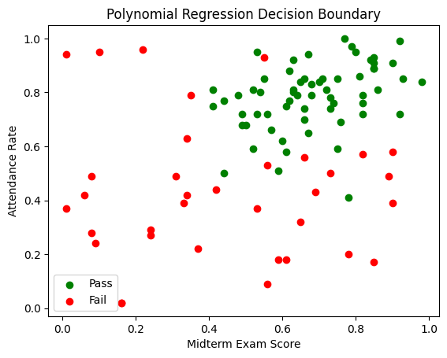
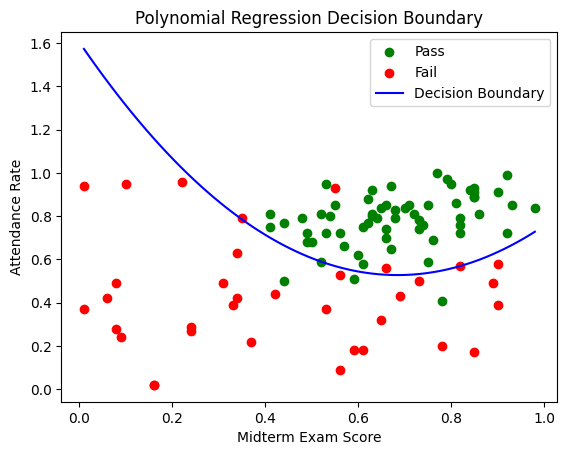

The task of classifying data has motivated the development of numerous machine-learning algorithms. In this paper, we will derive such an algorithm, supported by the seemingly unrelated basics of regression. This approach could lead to faster and more accurate classification of complex relationships.
To highlight the importance of the algorithm, let's focus on an specific usecase: A teacher wants to predict, whether his students will pass or fail his class. The prediction relies on two factors.
Throughout his teaching career, he has gathered this data for all his students and additionally, if they passed the class. How can he find out, which students will pass his class this year, based on the collected information?
Here you can see the plotted data:
 Download the data here: student_data.csvOur journey cannot begin without a good mathematical understanding of our data. We will think of each student $S_k$, as a tuple $(x_k, y_k, z_k) \in \mathbb{R}^3$, where
\[ z_k = \begin{cases} 1,& \text{if the student passed}\\ -1,& \text{otherwise} \end{cases} \]
Thus we will collect this data in the following vectors:
\[ \mathbf{x} = \begin{bmatrix} x_{1} \\ x_{2} \\ \vdots \\ x_{n} \end{bmatrix} \quad \mathbf{y} = \begin{bmatrix} y_{1} \\ y_{2} \\ \vdots \\ y_{n} \end{bmatrix} \quad \mathbf{z} = \begin{bmatrix} z_{1} \\ z_{2} \\ \vdots \\ z_{n} \end{bmatrix} \]
and group it in a matrix
\[ \mathbf{S} = \begin{bmatrix} S_1 \\ S_2 \\ \vdots \\ S_n \end{bmatrix} = \begin{bmatrix} x_1 & y_1 & z_1 \\ x_2 & y_2 & z_2 \\ \vdots & \vdots & \vdots \\ x_n & y_n & z_n \end{bmatrix} \]
with $n \in \mathbb{N}$ being the amount of students recorded. To get a visual understanding of our data, each $S_k$, will be marked as a point in the Cartesian Plane, with coordinates $(x_k, y_k)$. The value of $z_k$ will determine the color of the point. If $z_k = 1$, the point will be green, but if $z_k = -1$, the point will be red.
This short section is devoted to explaining how we will tackle the problem. As portrayed in Figure 4.1, we will attempt to find a polynomial function $f$, which visually is a boundary line, between the different colored points. Mathematically, this can be understood as finding an $f \in \mathbb{R}[x]$, such that, all $S_k \in \mathbf{S}$ with $z_k = 1$ satisfy the inequality, $y_k > f(x_k)$, and all $S_k \in \mathbf{S}$ with $z_k = -1$ satisfy the inequality, $y_k \leq f(x_k)$.
With this approach, given a new student located at $(x,y)$, we can identify if he will pass or fail the class, by determining which of the inequalities he satisfies. Notice that the student must always satisfy precisely one of the inequalities.
For anyone familiar with the concept, it might seem out of place, and irrelevant for the problem, but in the next section, we will think out of the box and see how this is the perfect tool.
For this section only, the data will be different. Let
\[ \mathbf{D} = \begin{bmatrix} D_1 \\ D_2 \\ \vdots \\ D_N \end{bmatrix} = \begin{bmatrix} x_1 & y_1 \\ x_2 & y_2 \\ \vdots & \vdots \\ x_N & y_N \end{bmatrix} \]
A linear regression model, is a function $f$ of the form $f(x) = \theta_1 x + \theta_0$, where $\theta_1, \theta_0 \in \mathbb{R}$, which attempts to model the linear relationship in the data. The idea is to find the ideal values of $\theta_1, \theta_0$, which are called the parameters of $f$. When trained, $f$ can be used to predict the $y$, for some $x$ which isn't in the data.
Visually, $f$ is a line, which tries to hit all points $D_k \in \mathbf{D}$, even though, it might not be perfectly achievable. This entire algorithm, as many others, require a loss function.
Given the coefficients of $f$, a loss function, $L$ measures the models ability to correctly predict values of $y_k$. A huge loss, implies a bad model, while a minimal loss, suggests a great model. Many different loss functions exist, but the one to be shown is the most common.
Let $L: \mathbb{R}^2 \rightarrow \mathbb{R}$. The Mean Squared Error loss function, is given by.
\[ L(\theta_0, \theta_1) = \frac{1}{N} \sum_{i=1}^N (y_i - f(x_i))^2 \]
With each $(x_k, y_k) \in \mathbf{D}$. We will attempt to minimize this function, using an algorithm called Gradient Descent.
Gradient descent is an iterative process, where all $\theta_i$ start as $0$, and approach the intended value. For all $\theta_i$ we apply this rule, after every iteration:
\[ \theta_i := \theta_i - \eta \frac{\partial L}{\partial \theta_i} \]
That is, $\theta_i$ is decreased, by the direction of steepest ascent.
The symbol $\eta$ (read eta) is called the learning rate, and scales this value appropriately. Typically, $\eta$ ranges somewhere between $0.001$ and $0.01$. The smaller learning rate, the more iterations needed to find the minimum, the slower our program. If one tries to increase the learning rate, off of this reason alone, a big problem arises.
Suppose $L(\theta_0, \theta_1)$ is already close to its minimum. If we adjust each $\theta_i$ massively, we might overshoot the minimum, thus never finding it.
Suppose, the passed and failed students, can be separated by a straight line. The loss function's role in the linear regression algorithm, was to define what we are attempting to achieve. We used the MSE loss function, to fit to a set of data-points. If we want to make a boundary line, we just have to modify the loss function!
We must create a loss function, which rewards red points being below the line, and green being above the line, while additionally, punish red points being above the line, and green points being below the line. Let's get to work!
For any student $S_k \in \mathbf{S}$ we got four scenarios to cover:
Notice how the term $f(x_k) - y_k$, is positive for points below line, and negative for points above.
In each case, we actually multiply the expression by $z_k$! That is, the loss for each point can be expressed as $z_k(f(x_k) - y_k)$.
Now, I will try augmenting, that rewarding the model doesn't do us any good. Suppose two points $(x_1, y_1)$ and $(x_2, y_2)$, with $x_1 \neq x_2$, have the property $|f(x_1) - y_1| = |f(x_2) - y_2|$. The point $(x_1, y_1)$ is correctly classified by the model, while the point $(x_2, y_2)$ is not. In the loss function, these will cancel out, making the mistake irrelevant. This is a huge issue, which is why we will remove the rewarding.
If the value of $z_k(f(x_k) - y_k)$ is negative, we want it to become 0. Hence we end with $\text{max}(0, z_k(f(x_k) - y_k))$.
We calculate the average of this value over all points, and get the final loss function.
\[ L(\theta_0, \theta_1) = \frac{1}{n} \sum_{k=1}^{n} \text{max}(0, z_k(f(x_k) - y_k)) \]
This is perfect! Minimizing this function, will allow for finding the ideal $\theta_1$ and $\theta_0$. Simply modifying the loss function is enough to change the use of the regression model completely. To use the gradient descent algorithm, which actually will let us determine $\theta_1$ and $\theta_0$, we must compute the partial derivatives of $L$. We will wait for this step, cause there is an issue to address.
Go back to the beginning of the last section. What do you notice? We supposed that the dots can be separated with a straight line. This tends to be a failing assumption, as real-world data tends to be more complex. Luckily, the idea of regression isn't limited to straight lines. In the next section we will resolve this issue.
This model, will successfully tackle the complexity of our data. A polynomial regression model is a function $f: \mathbb{R} \rightarrow \mathbb{R}$ of the form
\[ f(x) = \sum_{i=0}^d \theta_i x^i = \Theta^{\intercal} \mathbf{x} \]
for vectors
\[ \begin{aligned} \Theta &= \begin{bmatrix} \theta_0 \\ \theta_1 \\ \vdots \\ \theta_d \end{bmatrix} & \mathbf{x} &= \begin{bmatrix} x^0 \\ x^1 \\ \vdots \\ x^d \end{bmatrix} \end{aligned} \]
with $d \in \mathbb{N}$, being the so called degree of the polynomial $f$. I will not be the first to admit, that this is a mouthful, compared to simple linear regression, but the possibilities are rewarding, and suit our problem. The rest of the steps are exactly the same, as with linear regression. We will use the previously found loss function, with a minor adjustment, compute the partial derivatives, and we are done!
We must start by changing the loss function around a little. Since it's input was the coefficients of the linear model, there are a few more now. Let $L: \mathbb{R}^{d+1} \rightarrow \mathbb{R}$, with
\[ L(\Theta) = \frac{1}{n} \sum_{k=1}^{n} \text{max} \left(0, z_k \left(\sum_{i=0}^d \theta_i x_k^i - y_k\right) \right) \]
We have to find a formula for the partial derivative with respect to some $\theta_j$.
\[ \frac{\partial L}{\partial \theta_j} = \frac{1}{n} \sum_{k=1}^n \frac{\partial}{\partial \theta_j} \left[ \text{max} \left(0, z_k \left(\sum_{i=0}^d \theta_i x_k^i - y_k\right) \right)\right] \]
This can be divided into cases,
\[ \frac{\partial L}{\partial \theta_j} = \frac{1}{n} \sum_{k=1}^n \begin{cases} z_k x_k^j & \text{if } z_k (f(x_k)-y_k) > 0 \\ 0 & \text{if } z_k (f(x_k)-y_k) \leq 0 \end{cases} \]
This is because,
\[ \frac{\partial L}{\partial \theta_j} [z_k (f(x_k)-y_k)] = z_k x_k^j \]
This notation can be further simplified,
\[ \frac{\partial L}{\partial \theta_j} = \frac{1}{n} \sum_{k=1}^{n} z_k x_k^j \cdot \mathbb{1}_{\left\{ z_k (f(x_k)-y_k) > 0 \right\}} \]
which is our final expression. We did it! We have everything we need to use the gradient descent algorithm.
To stick to our standards of formality and mathematical rigor, $f$ cannot be considered a model. The model is what we described in section 3, and can be represented as follows.
\[ m(x,y) = \begin{cases} 1,& \text{if } y > f(x)\\ -1,& \text{if } y \leq f(x) \end{cases} \]
And there it is!
Since basic gradient descent works, we will not delve into the many optimization techniques for the algorithm. Instead, we will end off with a program, which will perform the discussed steps, and find the polynomial function separating the data shown in section 2. Let's run through what our program has to do.
The code can be found here, in the programming language, Python.
import numpy as np
import pandas as pd
import matplotlib.pyplot as plt
# Step 1: Read the data from a CSV file without headers
data = pd.read_csv('student_data.csv', header=None)
x = data.iloc[:, 0].values # Midterm exam scores
y = data.iloc[:, 1].values # Attendance rates
z = data.iloc[:, 2].values # Pass (1) or Fail (-1)
# Step 2: Initialize constants
learning_rate = 0.1
iterations = 50000
degree = 2 # Degree of the polynomial
# Step 3: Initialize polynomial coefficients
theta = np.zeros(degree + 1)
# Step 4: Define the polynomial function
def polynomial(x, theta):
return sum(theta[i] * x ** i for i in range(len(theta)))
# Step 5: Define the loss function
def loss_function(x, y, z, theta):
n = len(x)
loss = 0
for k in range(n):
f_xk = polynomial(x[k], theta)
loss += max(0, z[k] * (f_xk - y[k]))
return loss / n
# Step 6: Define the partial derivatives
def partial_derivatives(x, y, z, theta):
n = len(x)
partials = np.zeros_like(theta)
for j in range(len(theta)):
for k in range(n):
f_xk = polynomial(x[k], theta)
partials[j] += z[k] * x[k] ** j * (z[k] * (f_xk - y[k]) > 0)
partials[j] /= n
return partials
# Step 7: Perform gradient descent
for _ in range(iterations):
gradients = partial_derivatives(x, y, z, theta)
theta -= learning_rate * gradients
# Step 8: Plot the data and the polynomial
plt.scatter(x[z == 1], y[z == 1], color='green', label='Pass')
plt.scatter(x[z == -1], y[z == -1], color='red', label='Fail')
# Generate values for plotting the polynomial curve
x_values = np.linspace(min(x), max(x), 100)
y_values = polynomial(x_values, theta)
plt.plot(x_values, y_values, color='blue', label='Decision Boundary')
plt.xlabel('Midterm Exam Score')
plt.ylabel('Attendance Rate')
plt.title('Polynomial Regression Decision Boundary')
plt.legend()
plt.show()
print(loss_function(x, y, z, theta))
Or see the resulting plot here:
And that's it. We have developed a method, for the teacher to identify which students will fail or pass the class. Notice, this can be used in many other instances. I have not myself seen binary classification performed this way, which is why I wanted to present it to you, and everybody else reading. Thank you sincerely, for reading through this entire article. I wish you the best, on your personal machine learning journey!